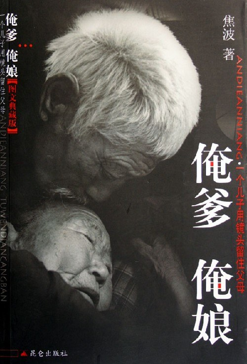

俺爹俺娘

总体观点
《俺爹俺娘》是中国当代纪实摄影与非虚构影像史上震撼亿万读者的平民史诗。摄影家焦波从1974年拿起第一台借来的海鸥相机起，直至老母亲与老父亲在九十余岁高龄相继安详离世，长达整整三十余年，用一万两千余张黑白与彩色底片，毫无修饰地记录了山东淄博山区老家两位普通中国农民的一生。
全书以近乎宗教般的虔诚与白描镜头，捕捉了爹娘在老院子里的粗茶淡饭、春种秋收、缝补浆洗、缠足老茧以及村口老槐树下的翘首期盼。这部作品不仅是一个儿子写给父母的无尽长情书，更是整整一代背井离乡涌入城市的中国儿女对生养自己的乡土中国与无私父母的深情祭奠，其朴素真挚的力量足以令所有人泪流满面。
核心观点
-
1. 平凡生命的无上尊严：在泥土与劳作中凝固的中国骨力
爹娘一辈子没有走出过大山，没有见过繁华世界，但他们凭借一身勤劳坚韧的骨头，养育了满堂儿女，展现了最硬朗的生命尊严。
老爹九十岁依然每天拄着拐棍去山地里背回一捆柴禾，老娘坐在磨盘前推磨转了一圈又一圈，汗水滴进麦面，脸上挂着满足的微笑。 -
2. 相濡以沫的乡村爱情：没有言语承诺的甲子深情
没有现代人的甜言蜜语与鲜花钻戒，老两口在六十余年风雨苦难中互相搀扶，一句‘你多吃口’道尽了人间真情极致。
老娘眼睛不好，老爹一辈子默默承担起给老娘剪脚指甲、梳头的琐事；老爹病重时老娘把冰凉的干枯双手贴在老爹胸口取暖。 -
3. 村口老槐树下的守望：天下父母对游子最深沉的牵挂
儿女成才进城工作成了爹娘最大的骄傲，但随之而来的也是漫长日夜里无止境的守望与孤独，门轴一响便以为儿女归来。
每次焦波探亲结束回北京，爹娘总是一步三颤送到村口山坡上，直到客车开出几里地远，后视镜里依然是两个伫立在风中的渺小黑点。 -
4. 镜头作为反哺的仪式：用影像与时间赛跑抗击遗忘
摄影不再是高高在上的艺术猎奇，而是儿女对抗父母衰老死亡、为平凡父母在人类记忆长河中树碑立传的孝道法宝。
焦波在中国美术馆举办《俺爹俺娘》摄影个展，特意把坐着轮椅的爹娘接进最高艺术殿堂，让全场观众向两位平凡农民起立鞠躬致敬。 -
5. 乡土中国的温厚伦理：重拾家庭与亲情的根基力量
在物质丰富却人际疏离的现代社会，重温爹娘的俭朴、诚实与慈悲，是治愈现代人精神浮躁、找回安身立命之本的心灵甘泉。
老爹生前留下的家训极简朴：‘人这一辈子，别贪非分之财，吃亏是福，只要脊梁骨挺直了，走到哪里都能昂首挺胸。’
全书结构
-
第一编 灶台与炕头：老院子里的三十年粗茶淡饭
以细腻镜头呈现山东老屋柴米油盐的日常肌理，记录爹娘在窑洞与土炕上的四季起居生活。
清晨老娘坐在灶台前拉风箱，缕缕炊烟升起，一锅热腾腾的棒子面窝窝头散发出农家最踏实的粮食香气。 -
第二编 缠足与老茧：爹娘在黄土地上的劳作印记
特写老娘三寸金莲与老爹布满厚茧的枯槁双手，见证二十世纪中国农民沉重而坚韧的肉体抗争史。
一张震撼世界的特写：老爹那双如同百年老树树皮般开裂干瘪的双手，紧紧握着一把被磨光了木柄的老铁锨。 -
第三编 聚少离多：村口老槐树下的翘首以盼
记录焦波作为北漂摄影记者数十次离家与归家的动人瞬间，展现中国家庭特有的深沉母爱与父爱。
过年回家推开柴扉的一刻，老娘从炕上连滚带爬迎出来，摸着儿子的脸不停抹眼泪连声念叨‘儿啊你瘦了’。 -
第四编 相濡以沫：六十年风雨同舟的磕磕绊绊与温存
捕捉老两口日常拌嘴、互相照料与夕阳下的亲昵细节，展现传统中国式夫妻最纯净动人的白头偕老。
阳光洒满打谷场，老娘假装生气扬起笤帚疙瘩追打老爹，老爹笑呵呵地小跑躲闪，岁月在镜头里泛出金黄暖光。 -
第五编 最后的告别：泪光中的归宿与对天下父母的祭奠
记录老爹老娘相继病重安详离世的全过程，以及焦波在父母坟头长跪不起、向全天下奉献一生的平凡父母致以崇高敬意。
老娘弥留之际紧紧攥着儿子焦波的手，在耳边用尽最后力气微弱呢喃‘波啊，好好做人’，在泪水中完成了生命接力。